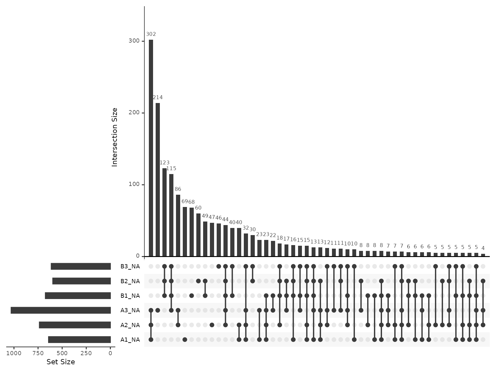
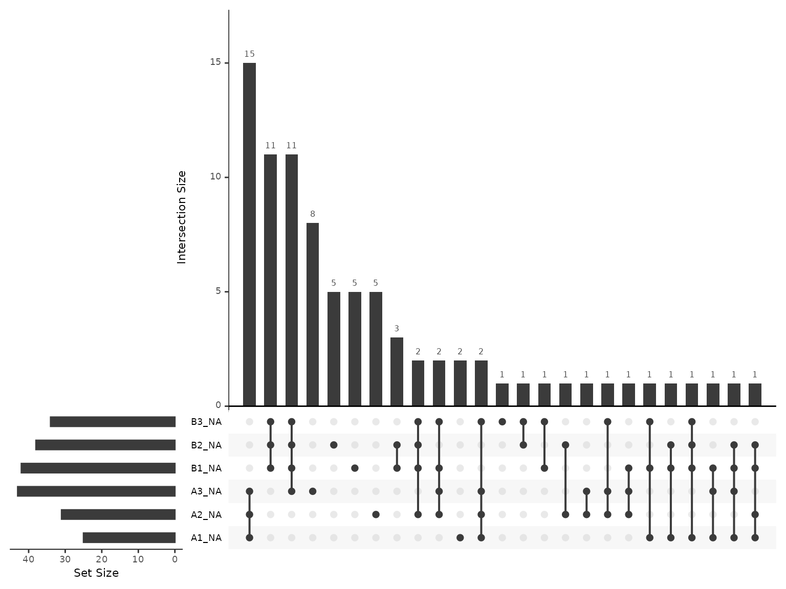

LFQ-DIA QC Peptide-level quantification and summarisation to protein-level abundance
Tom Smith
2025-04-02
LFQ_DIA_Peptide_QC.RmdTHIS VIGNETTE IS A WORK IN PROGRESS!
Label-Free Quantification (LFQ) is the simplest form of quantitative proteomics, in which different samples are quantified in separate MS runs. Quantification is either performed by Data-Dependent Aquisition (DDA), where the Mass Spectrometer triggers fragmentation of ions within a given m/z range with the aim being to focus attention of individual peptides separately, or Data-Independent Aquisition (DIA), where a much wider m/z range is used and a mix of peptides are co-fragmented and quantified simultaneously by deconvoluting the resultant complex spectra. Here, we will focus on just LFQ-DIA.
MORE DETAILS ON DIA REQUIRED HERE!
Load required packages
To clarify which functionality is provided by which package, we will
use package::function. For your own code, there is no need
to specify the package unless you want to maintain this clarity.
Defining the contaminant proteins
We need to remove contaminant proteins. These were defined here using the cRAP database. Below, we parse the contaminants fasta to extract the IDs for the proteins in both ‘cRAP’ format and Uniprot IDs.
crap_fasta_inf <- system.file(
"extdata", "cRAP_20190401.fasta.gz",
package = "biomasslmb"
)
# Extract the protein IDs associated with each cRAP protein
crap_accessions <- biomasslmb::get_crap_fasta_accessions(crap_fasta_inf)
print(head(crap_accessions))
#> [1] "cRAP001" "P00330" "cRAP002" "P02768" "cRAP003" "P00883"Read in input data
We start by reading in quantitative proteomics data into a
QFeatures object, which is the standard Bioconductor object
for holding quantitative proteomics data. See here
for documentation about the QFeatures object.
Here, we will use the biomasslmb::readDIANNFilter
function, which also allows us to control the FDR thresholds for the
precursor and protein (run-specific and global). This function reads in
the report.tsv file from DIA-NN. If you are happy with the
filtering settings in DIA-NN, you can directly read the
report.pr_matrix.tsv into a QFeatures object
using the QFeatures::readQFeatures function.
diann_report.tsv is a file available from the
biomasslmb package containing the output from DIA-NN for an
experiment with 6 samples. It is a truncated file containing the
precursors (peptides) for just 500 proteins.
diann_report_inf <- system.file(
"extdata", "diann_report.tsv",
package = "biomasslmb"
)
dia_qf <- readDIANNFilterQJoin(diann_report_inf,
global_protein_q=0.01,
run_protein_q=0.01,
run_precursor_q=0.01)
#> Checking arguments.
#> Loading data as a 'SummarizedExperiment' object.
#> Splitting data in runs.
#> Formatting sample annotations (colData).
#> Formatting data as a 'QFeatures' object.
#> 'Lib.PG.Q.Value' found in 6 out of 6 assay(s)
#> 'PG.Q.Value' found in 6 out of 6 assay(s)
#> 'Q.Value' found in 6 out of 6 assay(s)
#> Warning: 'experiments' dropped; see 'drops()'
#> harmonizing input:
#> removing 6 sampleMap rows not in names(experiments)We have 0 quantification values which are exactly zero here. Where these do exist, they should be replaced with NA, since mass spectrometry is not capable of asserting that the protein had zero abundance in the sample.
tmt_qf[['peptides_fdr_cntrl']] <- QFeatures::zeroIsNA(dia_qf[['peptides_fdr_cntrl']])Our column names include redundant information (‘HYE_DIA’)
colnames(dia_qf)[["peptides_fdr_cntrl"]]
#> [1] "HYE_DIA_A1" "HYE_DIA_A2" "HYE_DIA_A3" "HYE_DIA_B1" "HYE_DIA_B2"
#> [6] "HYE_DIA_B3"Below, we update the column names to remove the redundant information and then update the sample names in the QFeatures
colnames(dia_qf)[["peptides_fdr_cntrl"]] <- gsub('HYE_DIA_', '', colnames(dia_qf)[["peptides_fdr_cntrl"]])
dia_qf <- renamePrimary(dia_qf, colnames(dia_qf)[["peptides_fdr_cntrl"]])We need to populate the colData, which is currently
empty
data.frame(colData(dia_qf))
#> data frame with 0 columns and 6 rowsHere, we can create our colData from the sample names.
In other cases, you may need to read in a separate experimental design
file.
colData(dia_qf) <- data.frame(quantCols=rownames(colData(dia_qf))) %>%
separate(quantCols, sep='', into=c(NA, 'condition', 'replicate'), remove = FALSE) %>%
tibble::column_to_rownames('quantCols')
data.frame(colData(dia_qf))
#> condition replicate
#> A1 A 1
#> A2 A 2
#> A3 A 3
#> B1 B 1
#> B2 B 2
#> B3 B 3Adding the colData to the peptide-level data too.
colData(dia_qf[['peptides_fdr_cntrl']]) <- colData(dia_qf)We first perform routine filtering to remove PSMs that:
- Could originate from contaminants. See
?filter_features_pd_ddafor further details, including the removal of ‘associated cRAP’. - Don’t have a unique master protein.
dia_qf[['peptides_filtered']] <- biomasslmb::filter_features_diann(dia_qf[['peptides_fdr_cntrl']], contaminant_proteins=crap_accessions)
#> Filtering data...
#> 5009 features found from 454 master proteins => Input
#> 242 contaminant proteins supplied
#> 11 proteins identified as 'contaminant associated'
#> 4998 features found from 453 master proteins => contaminant features removed
#> 4998 features found from 453 master proteins => associated contaminant features removed
#> 4998 features found from 453 master proteins => features without a master protein removed
#> 4955 features found from 448 master proteins => features with non-unique master proteins removed
#> 4955 features found from 448 master proteins => features without quantification removedCheck normalisation
Next, we plot the peptide intensity distribution to check they are
approximately the same using biomasslmb::plot_quant. By
default, DIA-NN performs normalisation. See the documentation
for details of the underlying assumptions for the normalisation and use
cases where this normalisation approach may not be appropriate, e.g
interactome proteomics.
# Plot the peptide-level quantification distributions per sample
biomasslmb::plot_quant(dia_qf[['peptides_filtered']],
log2transform=TRUE,
method='density') +
theme_biomasslmb() +
xlab('PSM abundance (log2)')
Missing values
Below, we inspect the number of missing values per sample
nNA(dia_qf[['peptides_filtered']])$nNAcols %>%
data.frame() %>% knitr::kable(digits=2)| name | nNA | pNA |
|---|---|---|
| A1 | 641 | 0.13 |
| A2 | 736 | 0.15 |
| A3 | 1029 | 0.21 |
| B1 | 674 | 0.14 |
| B2 | 597 | 0.12 |
| B3 | 613 | 0.12 |
Here, the samples have between 12 - 21 % missing values. This is fairly typical of DIA data at the precursor level.
Next, we inspect the most common patterns for the missing values.
plot_missing_upset(dia_qf, i='peptides_filtered') The missingness is frequently observed for all 3 replicates of a single condition, but also commonly just for a single sample.
Summarising to protein-level abundances
Now that we have inspected the peptide-level quantification and filtered the peptides, we can summarise the peptide-level quantification to protein-level abundances.
Since DIA typically has too many missing values to exclude peptides
with missing values, the MsCoreUtils::robustSummary method
should preferred for summarisation to protein-level abundance. With
robustSummary, we do not need to remove all PSMs with
missing values since the summarisation algorithm deals with them
appropriately (Sticker et al. 2020)..
However, we still don’t want to retain PSMs with too many missing
values, since these will not be very informative in estimating the
protein-level quantification. Here, we will retain PSMs with at most 4/6
missing values
dia_qf[['peptides_filtered_missing']] <- QFeatures::filterNA(
dia_qf[['peptides_filtered']], 4/6)
biomasslmb:::message_parse(rowData(dia_qf[['peptides_filtered_missing']]),
'Protein.Group',
"Removing peptides with > 4/6 missing values")
#> 4863 features found from 441 master proteins => Removing peptides with > 4/6 missing valuesNext, we will remove PSMs for proteins with fewer than 2 PSMs. This is a common filter in proteomics to ensure the protein-level quantifications are derived from at least two independent observations. In some cases, for example phosphoproteomics, or where this filter appears to be too stringent, it may be appropriate to skip it.
min_psms <- 2
dia_qf[['peptides_filtered_forRobust']] <- biomasslmb::filter_features_per_protein(
dia_qf[['peptides_filtered_missing']], min_features = min_psms, master_protein_col='Protein.Group')
biomasslmb:::message_parse(rowData(dia_qf[['peptides_filtered_forRobust']]),
'Protein.Group',
"Removing peptides for proteins with < 2 peptides")
#> 4829 features found from 407 master proteins => Removing peptides for proteins with < 2 peptidesNow we can summarise with robustSummary
# Aggregate to protein-level abundances (using QFeatures function)
dia_qf <- QFeatures::aggregateFeatures(dia_qf,
i = "peptides_filtered_forRobust",
fcol = "Protein.Group",
name = "protein",
fun = MsCoreUtils::robustSummary,
maxit=10000) # ensure sufficient iterations for convergance
#> Your quantitative data contain missing values. Please read the relevant
#> section(s) in the aggregateFeatures manual page regarding the effects
#> of missing values on data aggregation.
biomasslmb:::message_parse(rowData(dia_qf[['protein']]),
'Protein.Group',
"Summarised to proteins")
#> 407 features found from 407 master proteins => Summarised to proteinsPrior to summaristaion, we removed PSMs from proteins with fewer than
2 PSMs. However, since we left in PSMs with missing values, it’s
possible for some protein-level abundances to be derived from just a
single PSM. We can use the get_protein_no_quant_mask from
biomasslmb to identify where the protein abundances will be
derived from fewer than n features (PSMs). We can then give
this mask to mask_protein_level_quant to replace these
quantification values with NA.
# plot = TRUE means we will also get a plot of the number of proteins quantified in each sample
protein_retain_mask <- biomasslmb::get_protein_no_quant_mask(
dia_qf[['peptides_filtered_forRobust']], min_features=2, plot=TRUE, master_protein_col='Protein.Group') 
dia_qf[['protein']] <- biomasslmb::mask_protein_level_quant(
dia_qf[['protein']], protein_retain_mask)Re-inspecting missing values at protein-level
Now that we have protein-level abundances, we would like to re-inspect the missing values. Overall, we have 8.722 % missing values, with at most 10.565 % missing values in any given sample. The most common missingness pattern is for the protein to be missing from all 3 samples for a single condition.
nNA(dia_qf[['protein']])$nNAcols %>%
data.frame() %>% knitr::kable(digits=2)| name | nNA | pNA |
|---|---|---|
| A1 | 25 | 0.06 |
| A2 | 31 | 0.08 |
| A3 | 43 | 0.11 |
| B1 | 42 | 0.10 |
| B2 | 38 | 0.09 |
| B3 | 34 | 0.08 |
plot_missing_upset(dia_qf, i='protein')
Inspecting the number of peptides and proteins through the processing steps
Now that we have performed all the filtering steps and summarisation
to protein-level abundances, it’s helpful to visualise how many
peptides/proteins were retained at each level of the processing. We can
use the biomasslmb::get_samples_present and
biomasslmb::plot_samples_present functions for this. First
though, we need to decide which ‘experiments’ we want to plot and define
a named character vector since the QFeatures names are not sufficiently
clear by themselves
Below, we inspect the experiment names.
names(dia_qf)
#> [1] "peptides_fdr_cntrl" "peptides_filtered"
#> [3] "peptides_filtered_missing" "peptides_filtered_forRobust"
#> [5] "protein"In this case, we want to plot all the experiments.
Samples per PSM
We’ll start by inspecting the number of PSMs in each experiment. We
therefore define a named character vector all the PSM-level experiments,
exlcuding psms_filtered_norm. We set the row variables to
be Precursor.Id so that we count the number of unique
peptides (precursors).
rename_cols <- c('Peptides passing FDR thresholds' = 'peptides_fdr_cntrl' ,
'Quantified, contaminants removed' = 'peptides_filtered',
'<= 4/6 missing values' = 'peptides_filtered_missing',
'>1 peptides per protein' = 'peptides_filtered_forRobust')
rowvars <- c('Precursor.Id')
samples_present <- get_samples_present(dia_qf[,,unname(rename_cols)], rowvars, rename_cols)
#> harmonizing input:
#> removing 6 sampleMap rows not in names(experiments)
plot_samples_present(samples_present, rowvars, breaks=seq(2,10,2)) + ylab('PSM')
#> Scale for fill is already present.
#> Adding another scale for fill, which will replace the existing scale.Samples quantified for each PSM at each level of processing
Samples per Protein
Next, we’ll use the same functions to inspect the number of proteins
at each level of processing. We need to supply an updated named
character vector to include the protein experiment and set
the row variables to be just the Master.Protein.Accesions
column.
rename_cols_prot <- c(rename_cols, 'Protein'='protein')
rowvars_prot <- c('Protein.Group')
samples_present <- get_samples_present(dia_qf, rowvars_prot, rename_cols_prot)
plot_samples_present(samples_present, rowvars_prot, breaks=seq(2,10,2))
#> Scale for fill is already present.
#> Adding another scale for fill, which will replace the existing scale.Samples quantified for each protein at each level of processing
From these two plots, we can see that the filtering to ensure that all proteins have >1 peptides removed only a few peptides, but more proteins. Whether this is appropriate will depend on your data in hand.
sessionInfo()
#> R version 4.4.3 (2025-02-28)
#> Platform: x86_64-pc-linux-gnu
#> Running under: Ubuntu 24.04.2 LTS
#>
#> Matrix products: default
#> BLAS: /usr/lib/x86_64-linux-gnu/openblas-pthread/libblas.so.3
#> LAPACK: /usr/lib/x86_64-linux-gnu/openblas-pthread/libopenblasp-r0.3.26.so; LAPACK version 3.12.0
#>
#> locale:
#> [1] LC_CTYPE=C.UTF-8 LC_NUMERIC=C LC_TIME=C.UTF-8
#> [4] LC_COLLATE=C.UTF-8 LC_MONETARY=C.UTF-8 LC_MESSAGES=C.UTF-8
#> [7] LC_PAPER=C.UTF-8 LC_NAME=C LC_ADDRESS=C
#> [10] LC_TELEPHONE=C LC_MEASUREMENT=C.UTF-8 LC_IDENTIFICATION=C
#>
#> time zone: UTC
#> tzcode source: system (glibc)
#>
#> attached base packages:
#> [1] stats4 stats graphics grDevices utils datasets methods
#> [8] base
#>
#> other attached packages:
#> [1] dplyr_1.1.4 tidyr_1.3.1
#> [3] ggplot2_3.5.1 biomasslmb_0.0.2
#> [5] QFeatures_1.16.0 MultiAssayExperiment_1.32.0
#> [7] SummarizedExperiment_1.36.0 Biobase_2.66.0
#> [9] GenomicRanges_1.58.0 GenomeInfoDb_1.42.3
#> [11] IRanges_2.40.1 S4Vectors_0.44.0
#> [13] BiocGenerics_0.52.0 MatrixGenerics_1.18.1
#> [15] matrixStats_1.5.0
#>
#> loaded via a namespace (and not attached):
#> [1] DBI_1.2.3 gridExtra_2.3 rlang_1.1.5
#> [4] magrittr_2.0.3 clue_0.3-66 compiler_4.4.3
#> [7] RSQLite_2.3.9 png_0.1-8 systemfonts_1.2.1
#> [10] vctrs_0.6.5 reshape2_1.4.4 stringr_1.5.1
#> [13] ProtGenerics_1.38.0 pkgconfig_2.0.3 crayon_1.5.3
#> [16] fastmap_1.2.0 XVector_0.46.0 labeling_0.4.3
#> [19] rmarkdown_2.29 UCSC.utils_1.2.0 visdat_0.6.0
#> [22] ragg_1.3.3 UpSetR_1.4.0 purrr_1.0.4
#> [25] bit_4.6.0 xfun_0.51 zlibbioc_1.52.0
#> [28] cachem_1.1.0 jsonlite_2.0.0 blob_1.2.4
#> [31] DelayedArray_0.32.0 cluster_2.1.8 R6_2.6.1
#> [34] bslib_0.9.0 stringi_1.8.7 genefilter_1.88.0
#> [37] jquerylib_0.1.4 Rcpp_1.0.14 knitr_1.50
#> [40] usethis_3.1.0 BiocBaseUtils_1.8.0 Matrix_1.7-2
#> [43] splines_4.4.3 igraph_2.1.4 tidyselect_1.2.1
#> [46] abind_1.4-8 yaml_2.3.10 lattice_0.22-6
#> [49] tibble_3.2.1 plyr_1.8.9 withr_3.0.2
#> [52] KEGGREST_1.46.0 evaluate_1.0.3 desc_1.4.3
#> [55] survival_3.8-3 Biostrings_2.74.1 pillar_1.10.1
#> [58] corrplot_0.95 generics_0.1.3 rprojroot_2.0.4
#> [61] munsell_0.5.1 scales_1.3.0 xtable_1.8-4
#> [64] glue_1.8.0 lazyeval_0.2.2 tools_4.4.3
#> [67] robustbase_0.99-4-1 annotate_1.84.0 fs_1.6.5
#> [70] XML_3.99-0.18 grid_4.4.3 MsCoreUtils_1.18.0
#> [73] AnnotationDbi_1.68.0 colorspace_2.1-1 GenomeInfoDbData_1.2.13
#> [76] naniar_1.1.0 cli_3.6.4 textshaping_1.0.0
#> [79] S4Arrays_1.6.0 AnnotationFilter_1.30.0 gtable_0.3.6
#> [82] DEoptimR_1.1-3-1 sass_0.4.9 digest_0.6.37
#> [85] SparseArray_1.6.2 htmlwidgets_1.6.4 farver_2.1.2
#> [88] memoise_2.0.1 htmltools_0.5.8.1 pkgdown_2.1.1
#> [91] lifecycle_1.0.4 httr_1.4.7 bit64_4.6.0-1
#> [94] MASS_7.3-64